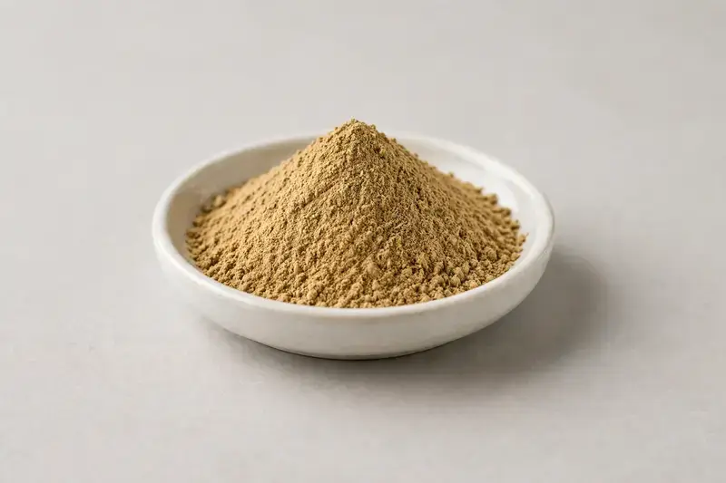

Triphala — classical three-fruit Ayurvedic blend powder for digestive-wellness and herbal capsule formulations.

Overview
Triphala is a traditional three-fruit blend of Emblica officinalis, Terminalia bellirica and Terminalia chebula, traded as a fine powder or as extract grades for herbal and digestive-wellness formats. Overseas supplement brands continue to request it for Ayurvedic-style blends and multi-herb capsules. As a Xi'an-based trading company, we source through vetted partner producers and match each buyer's target mesh, ratio or extract spec before quoting.
Specifications below reflect commonly requested options in the market — not a stock list. Share your target spec and we'll confirm exactly what we can supply, honestly.
| Specification | Details |
|---|---|
| Botanical identity | Triphala fruit blend powder (Emblica officinalis + Terminalia bellirica + Terminalia chebula) |
| Marker compound | Commonly requested spec grades: straight fruit powder at various mesh sizes; extract grades expressed as 4:1 to 10:1 or tannin-based markers — confirm your target with us. |
| Appearance | Fine powder, color typical of the extract |
| Mesh size | Typically 80–100 mesh (confirm per inquiry) |
| Testing | COA/TDS arranged on request; scope agreed per your spec |
Applications
Documentation
We don't claim in-house labs or certifications we don't hold. COA and TDS documents can be arranged on request, and testing scope is agreed against your specification before supply.
FAQ
Related products
Theobroma cacao
Key marker: Theobromine 10-20%
View specs →Codonopsis pilosula
Key marker: 10:1 or polysaccharides
View specs →Rehmannia glutinosa
Key marker: 10:1 or catalpol
View specs →5-Hydroxytryptophan
Key marker: 98-99% HPLC
View specs →Ergothioneine
Key marker: 98%+ fermentation
View specs →Send your target spec and volumes — we'll respond with a tailored quotation.
Request a Quote